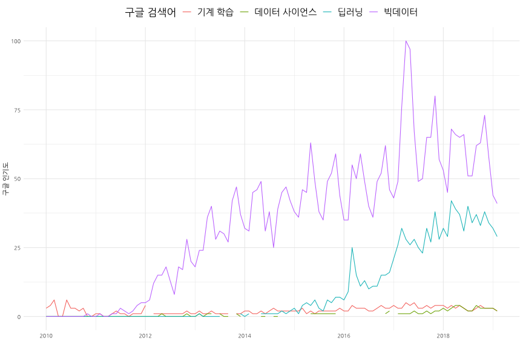
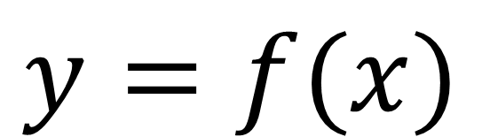
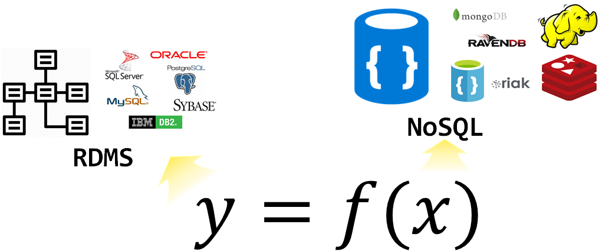
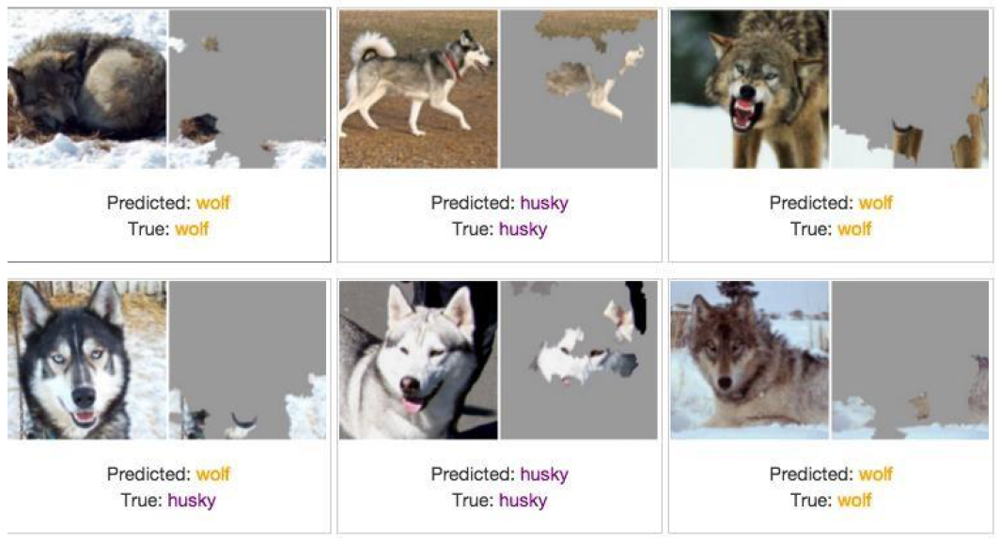
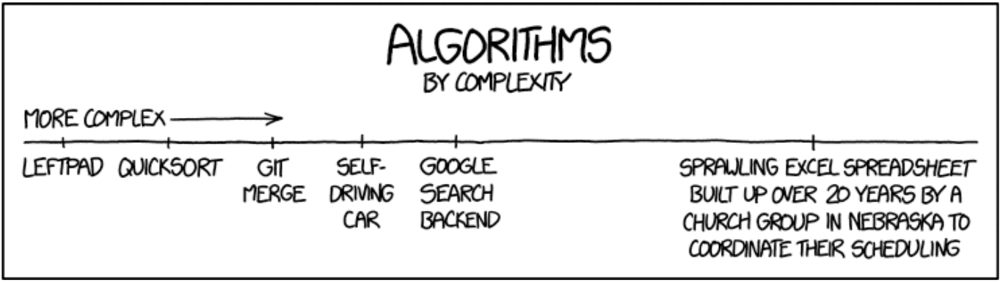

데이터 사이언스 가치
빅데이터의 이해와 정책 활용
- 강의주제: 빅데이터의 이해와 정책 활용
- 강의일시
- 2019년 6월 17일(월) 15:00 ~ 17:00 (1기)
- 2019년 7월 08일(월) 15:00 ~ 17:00 (1기)
- 강의장소: 경기도 인재개발원 본관 307호
- 대상: 도, 시군 공무원 및 공공기관 직원
- 강의내용
- 빅데이터 개념
- 빅데이터 사례
- 현업에 돌아가서 빅데이터 정책을 활용
데이터 과학자
.pull-left[  ]
]
.pull-right[ ]
.footnote[ - 삼정 KPMG 데이터 과학자 - 연세대학교 겸임교수, “데이터 사이언스 입문” - 이광춘(2019) “데이터 사이언스, 타이디버스로 향하다”, 마이크로소프트웨어 395호 - 데이터 사이언스 미트업 운영 - 소프트웨어 카펜트리(Software Carpentry) 강사 (Kwangchun Lee) - Cloudera Conference 2018 - Seoul: 기계의 역습 - 설명가능한 기계학습]
class: inverse, middle, center
빅데이터 → 데이터 사이언스
구글 Trends 데이터 사이언스 한미 비교 - 한국

데이터 사이언스 업무 - 에어비앤비

- 분석(Analytics) 데이터 과학자(Data Analyst)는 좋은 질문을 던질 수 있고, 탐색적 데이터 분석을 통해서 문제와 해법을 명확히 하는 재주가 있고, 대쉬보드와 시각화를 통해 데이터 분석을 자동화하고, 추천 결과물을 통해 비즈니스를 변화시킨다.
- 알고리즘(algorithm) 데이터 과학자(AI/Machine Learning Engineer)는 기계학습에 특기가 있는 사람에 적합하고 제품/서비스, 프로세스에 데이터를 알고리즘을 통해 녹여내서 비즈니스 가치를 창출한다.
- 추론(inference) 데이터 과학자(Statistician)는 통계를 사용해서 의사결정을 향상시키고, 업무의 영향도를 측정하는데 주로 통계학, 경제학, 사화과학 전공지식을 적극 활용한다.
.footnote[ Elena Grewal(July 25, 2018), “One Data Science Job Doesn’t Fit All”]
가치(Value) 원천
.center[  ]
]
세계은행(World Bank)과 한국개발연구원(KDI)은 약 2년여 기간의 공동연구를 통해 1960-2005 년간 한국 경제발전 과정에 관한 보고서를 출간했다. 경제성장이 지속되기 위해서는 생산성 증가가 대단히 중요하고, 1960년 이후 한국경제의 성공은 광의의 지식축적에 기인한 것으로 1960-2005년 사이 한국의 실질 1인당GDP의 75%가 광의의 지식축적에 기인한 것으로 분석했다.
자동차 클러스터 사례
.center[  ]
]
수직적 시장 → 인공지능 시장
.center[  ]
]
- 수직적(Vertical) 시장 → 플랫폼(Platform) 시장 → 인공지능(AI) 마켓으로
class: middle, center

class: middle, center

class: inverse, middle, center
은폐된 데이터 사이언스 진실
실제로 분류한 것은?
.center[ ]
암묵적 담합에 대한 법규 준수
.left[
>
+ if (가격 상관계수 > 0.9999 &
+ case_when(회사 알고리즘,
+ 모니터링 알고리즘 ~ TRUE,
+ 병행 알고리즘 ~ TRUE,
+ 신호 알고리즘 ~ TRUE,
+ 작학습 알고리즘 ~ TRUE)) {
+ return(공정거래법 위반)
+ } else {
+ return(공정거래법 위반 없음)
+ }
+ ]
.right[ ]
.footnote[ 연합뉴스 (2018/10/31), ‘전설적인 美 보스턴 갱두목, 비참한 최후…“종신형 감옥서 피살”’]
기계의 역습 - 설명가능한 기계학습
.center[ ]
.footnote[ - Cloudera Conference 2018 - Seoul: 기계의 역습 - 설명가능한 기계학습]
class: inverse, left
도전받는 데이터 사이언스 도구
엑셀
.footnote[ 1. 도전받는 데이터 사이언스 도구: 엑셀 1. 도전받는 데이터 사이언스 도구: 파워포인트 1. 도전받는 데이터 사이언스 도구: 워드]
스프레드쉬트 참사
| 회사 | 손실 | 날짜 | 영향 | 참사 개요 |
|---|---|---|---|---|
| Mouchel | £ 4.3백만 | ’10.11월 | CEO 사임, 주가폭락 | 연금펀드평가 £ 4.3백만 엑셀 오류 |
| C&C Group | £ 9 백만 | ’09.7월 | 주가 15% 하락 등 | 매출 3% 상승이 아니고 5% 하락, 엑셀 오류 |
| King 펀드 | £ 130 백만 | ’11.05월 | 브래드 이미지 하락 | 웨일즈 지방 NHS 지출 엑셀 오류 |
| AXA Rosenberg | £ 150 백만 | ’11.02월 | 은폐, 벌금, 브래드 이미지 하락 | 엑셀 오류를 감춰서 $242 백만 벌금 |
| JP Morgan Chase | £ 250 백만 | ’13.01월 | 명성, 고객 신뢰도 저하 | 바젤 II VaR 위험 평가 엑셀 오류 |
| Magellan 펀드 | £ 1.6 십억 | ’95.01월 | 투자자에게 약속한 배당금 지급 못함 | 음수 부호 누락으로 자본이득 과대계상 |
| 미연방준비위원회 | £ 2.5 십억 | ’10.10월 | 명확하지 않음 | 리볼빙 카드 신용액 산출 과정에 엑셀 오류 |
.footnote[ THE DIRTY DOZEN 12 MODELLING HORROR STORIES & SPREADSHEET DISASTERS]
스프레드쉬트 알고리즘 복잡성
.center[ ]
.footnote[ 탈옥(jailbreakr) – 엑셀에서 탈출… 자유]
class: inverse, left
도전받는 데이터 사이언스 도구
파워포인트
.footnote[ 1. 도전받는 데이터 사이언스 도구: 엑셀 1. 도전받는 데이터 사이언스 도구: 파워포인트 1. 도전받는 데이터 사이언스 도구: 워드]
세가지 다른 글쓰기 패러다임

도구가 자동화하는 저작 업무
.pull-left[ ### 3. SW 도움말 
]
.pull-right[ ### 4. 블로그
.center[  ]
]
데이터 과학을 위한 저작도구 블로그 - blogdown ] xwMOOC 블로그 - netlify
class: inverse, left
도전받는 데이터 사이언스 도구
워드
.footnote[ 1. 도전받는 데이터 사이언스 도구: 엑셀 1. 도전받는 데이터 사이언스 도구: 파워포인트 1. 도전받는 데이터 사이언스 도구: 워드]
재현가능한 글쓰기 환경
.center[  ]
]
.footnote[ 데이터 과학: 재현가능한 저작 - R 마크다운 논문]
글쓰기 사례 - 글쓰기는 코딩
- 마크다운(Markdown)
- 제목, 글꼴, 중요항목, 그림, 표, …
- 한번 작성하고 나머지는 기계에 위탁
- 자바(Write Once, Run Anywhere)
- HTML, 워드, PDF, …
- 글쓰기에 수학을 넣어보자
- 수식, 표, 그래프, …
- 학위 논문과 저널에 투고할 논문을 저작해보자.
- 참고문헌, 인용, 색인, …
- 이제는 디지털 시대
- 인터랙티브 웹페이지
- 데이터 사이언스 글쓰기
- 데이터기반 의사결정을 시작합니다.
- 재현가능한 데이터 사이언스 및 의사결정
.footnote[ 데이터 과학: 재현가능한 저작]
디지털 노동과 글쓰기
.center[ ]
디지털 노동
- Digital Laobr
- RPA(Robot Process Automation)
- Cognitive Technology
- Resume
- Cognitive Contract Management
- LIOBR
- …
- AI
- 데이터 품질